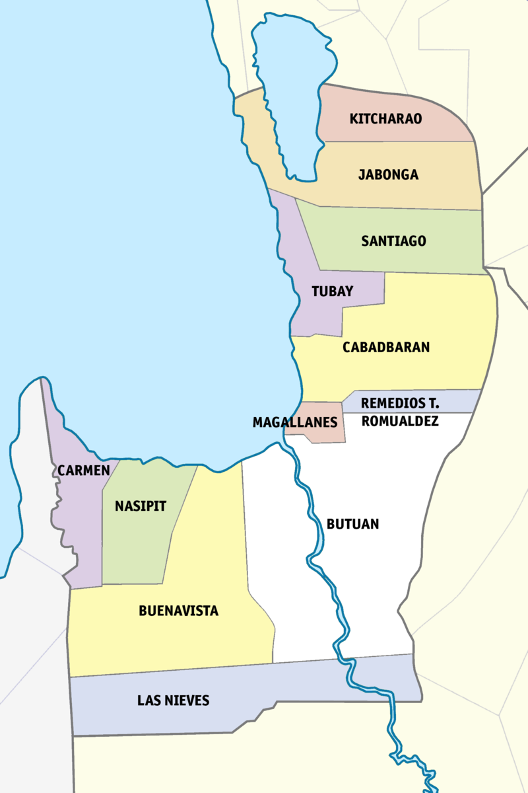

Agusan del Norte
The Timber Capital of the South

What is Agusan del Norte?
Agusan del Norte is a mountainous province found in the Region XIII or the CARAGA region.
Most of the province is located on the northeast of the island of Mindanao. Its coast is on the
Butuan Bay. It is bordered by the provinces of Misamis Oriental, Agusan del Sur, Surigao del Sur,
and Surigao del Norte where on the border we can find the fourth largest lake in the Philippines, Lake Mainit.
Most of the population live on the coast of Butuan Bay or near the Butuan River, the longest river in the province.
The province is also the home of the Manobo tribe. In fact, the name of the province came from the Manobo word "agosan" which means "where the water flows", referring to the Butuan River. The province's capital is Cabadbaran (de jure) and Butuan (de facto).
Now let us discover the natural wonders of Agusan del Norte.
The province is also the home of the Manobo tribe. In fact, the name of the province came from the Manobo word "agosan" which means "where the water flows", referring to the Butuan River. The province's capital is Cabadbaran (de jure) and Butuan (de facto).
Now let us discover the natural wonders of Agusan del Norte.
- Mount Hilong-hilong in Cabadbaran
- Mount Pongkay (Prayer Mountain) in Cabadbaran
- Lake Mainit
- Bolihon Beach in Carmen
- Butuan National Museum
- Gosoon Fish Sanctuary
- Banza Church Ruins in Butuan
- Balangay Shrine Museum
References
- caragaregion.com
- danielsecotravels.com
- goodnewspilipinas.com
- kapediaries.wordpress.com
- pasaliphilippines.com
- pinterest.ph
- wikipedia.org/wiki/Agusan_del_Norte